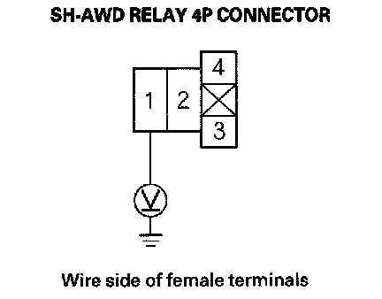
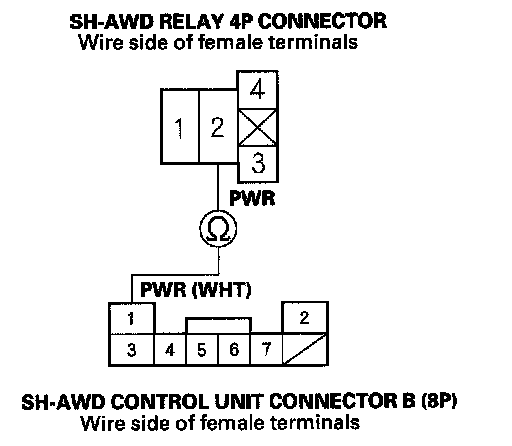
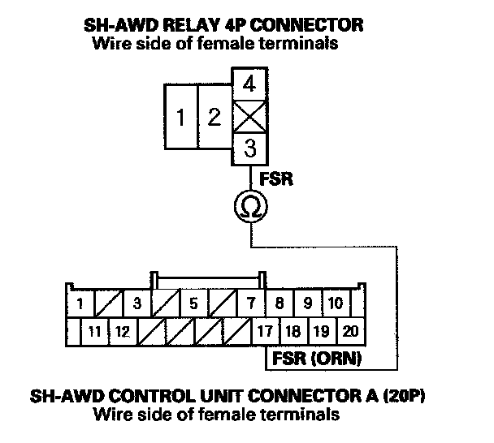
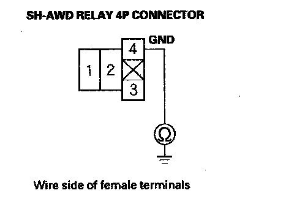
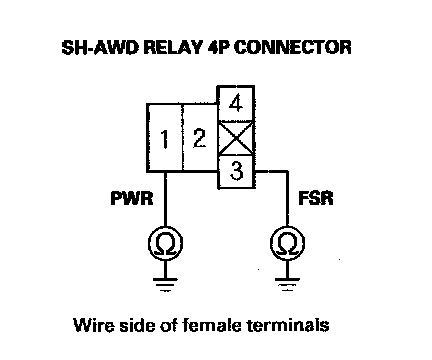

DTC 44-50
DTC 44-50: SH-AWD Control Unit Power Supply Voltage LowNOTE: Before you troubleshoot, review the general troubleshooting information.
1. Make sure the battery is fully changed and the charging system is working properly.
2. Turn the ignition switch OFF.
3. Check these fuse:
^ No. 3 (RR F/B) (60 A) fuse in the main under-hood fuse/relay box.
^ No. 9 (30 A) fuse in the rear fuse/relay box.
Are the fuses OK?
YES - Go to step 4.
NO - Replace the blown fuses and recheck. If the No. 3 (60 A) and No. 9 (30 A) fuses blows again, repair short to ground in the wire between the fuse and the SH-AWD relay, then replace the fuse and recheck.
4. Clear the DTC with the HDS.
5. Start the engine.
6. Check for DTCs with the HDS.
Is DTC 44-50 indicated?
YES - Go to step 7.
NO - Intermittent failure, the system is OK at this time.
7. Turn the ignition switch OFF.
8. Remove the SH-AWD relay then test the SH-AWD relay.
Is the SH-AWD relay OK?
YES - Go to step 9.
NO - Replace the SH-AWD relay.
9. Measure voltage between SH-AWD relay 4P connector terminal No. 1 and body ground.

Is there battery voltage?
YES - Go to step 10.
NO - Repair open in the wire between the No. 1 fuse in the under-hood fuse relay box and the SH-AWD relay.
10. Disconnect SH-AWD control unit connector A (20P) and connector B (8P).
11. Check for continuity between SH-AWD control unit connector terminal B1 and SH-AWD relay 4P connector terminal No. 2.

Is there continuity?
YES - Go to step 12.
NO - Repair open in the wire between SH-AWD control unit connector B and the SH-AWD relay connector.
12. Check for continuity between SH-AWD control unit connector terminal A17 and SH-AWD relay 4P connector terminal No. 3.

Is there continuity?
YES - Go to step 13.
NO - Repair open in the wire between SH-AWD control unit connector A and the SH-AWD relay connector.
13. Check for continuity between SH-AWD relay 4P connector terminal No. 4 and body ground.

Is there continuity?
YES - Go to step 14.
NO - Repair open in the wire between the SH-AWD relay and body ground.
14. Check for continuity between SH-AWD relay 4P connector terminals No. 1 and No. 3 to body ground (G604).

Is there battery continuity?
YES - Repair short in the wire between SH-AWD relay and body ground.
NO - Check for loose connector terminals at the SH-AWD control unit. If the connections are OK, update the SH-AWD control unit if it does not have the latest software or substitute a known-good SH-AWD control unit and recheck. If the symptom/indication goes away with the updated SH-AWD control unit, troubleshooting is complete. If the symptom/indication goes away with a known-good SH-AWD control unit, replace the original SH-AWD control unit.